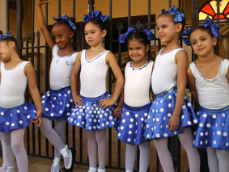
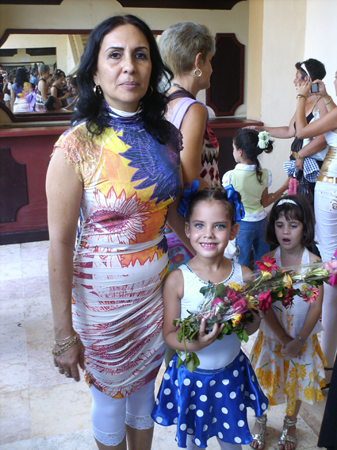

Cuenta el escritor y amigo José Luis Álvarez que allá por los años ochenta asistir a una función de ballet en el “Lorca” era un espectáculo pintoresco. Relata que eran rimbombantes los saludos de Alicia y esas ovaciones de los balletómanos a las que ella respondía con nuevas reverencias. Por si todo esto fuera poco, refiere unos intermedios deliciosos que reservaban otras “funciones”, esta vez en los baños del “Lorca” y a cuenta de unas “singulares” bailarinas.

Mi relación con el Ballet es menos pintoresca y empieza con la obsesión por hacer de mi hija una “Giselle” etérea y reluciente. Ese empeño, para el cual mi niña no me ha dado ninguna autorización, me hace recorrer todos los días grandes distancias en una pesada bicicleta china con muy poca efectividad en los frenos. Llegamos a casa ya entrada la noche y mientras ella hace sus tareas y mi esposa corre con la comida, yo me escurro el sudor de la jornada. En esos instantes, me he sentido más cansado que el mismo Sísifo y hasta he llegado a pensar si no estaré yo más loco que las “locas” del “Lorca”.
El espectáculo por los cuarenta y dos años del Ballet de Camaguey y los treinta años de vida artística de Regina Balaguer y María Herminia Hernández me demostró que no soy el único chiflado de la villa. La mañana del ocho de diciembre, mientras esperaba en las escaleras del Principal para comprar las entradas, conocí a una abuela obsesionada con su nieta, o para decirlo mejor, con hacerla bailarina. Para tan noble sueño trabajaba sin descanso. Todo su salario se iba en tutús y vestidos de ocasión. Historias como esa escuché miles, tantas, que de contarlas harían de este escrito una crónica interminable.
Debo manifestar que una de las cosas más atractivas de la noche estuvo a cargo de esos sueños obsesivos. A una amiga le pareció trillada esa manera de concebir un espectáculo donde los más nuevos anuncian a los ya consagrados. Es cierto, otras veces he observado el mismo procedimiento, pero esta crónica no la escribe Yoan Manuel Pico, aquí soy juez y parte. Soy el crítico frío, pero también el padre de la bicicleta china (no olviden este detalle). Tal vez por eso aquellas nenas ataviadas y tímidas me parecieron el homenaje más sincero que podía recibir el ballet de Camagüey. Más sincero y cálido, por supuesto, que el tributado por las instituciones culturales de la provincia.

En ese otro agasajo fue penoso escuchar discursos con evidentes errores de redacción. Más lamentable resultó el leído por la propia Compañía, en este caso, a los referidos deslices se sumó un discurso demasiado kitsch y lastrado por la deplorable dicción de la maestra de ceremonias. No hay que asustarse, al final el Ballet hizo lo que mejor sabe: bailar. Y aquella noche la danza fue impecable. Un ballet como “El lago de los cisnes” que requiere tanto del trabajo en equipo, fue ejecutado con bastante dignidad. En ello mucho tuvo que ver Mailín Domínguez, sobre todo porque desde hace un tiempo esta bailarina es la Mirtha de la reina de las Willis, papel que la obliga a cierta dureza y frialdad en las ejecuciones. El nuevo rol de Odette la obligaba a devorarse a sí misma y Mailín lo logró.
Sin embargo, he de confesar que lo más llamativo, al menos para mí, llegó de la mano de Claudia Monje, una bailarina que se diferenciaba de las demás por su piel oscura. Supe de ella cinco horas antes. La abuela balletómana me contó de una bailarina que por razones que no tienen nada que ver con lo artístico, se vio imposibilitada de participar en una gira por Europa.
Porque conocí de este incidente, disfruté mucho más sus impecables ejecuciones. Confieso que me agradó aquel cisne negro sobre el tabloncillo del más principal de los teatros. Como tantos otros, yo solo advertí la punta del iceberg. Sin embargo, pude imaginar la historia de sacrificios que se ocultaba detrás. Recordé a Obdulio Fenelo y a la Francisca de su cuento “Las negras lindas no bailan Giselle” y sobre todo, pensé en Sofía, en mi sudor, en el difícil camino que conduce a la belleza.